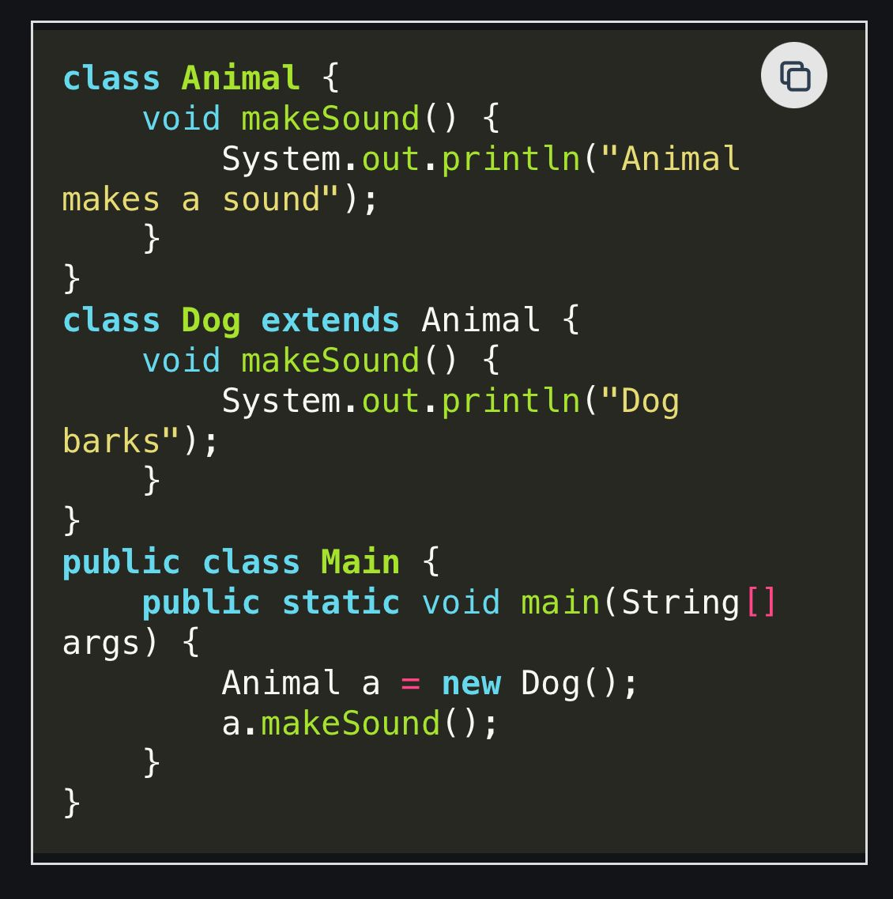

What happens if an abstract class does not have any abstract methods ?
Question-2

Question-3
Which of the following statements about abstract classes is correct
Question-4
Which of the following is true about interfaces in java.
1) An interface can contain following type of members. ....public, static, final fields (i.e., constants) ....default and static methods with bodies 2) An instance of interface can be created. 3) A class can implement multiple
interfaces.
4) Many classes can implement the same interface.